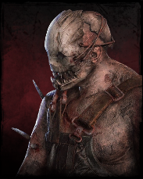
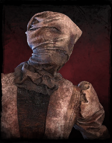
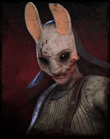
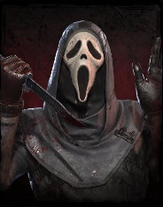
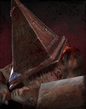
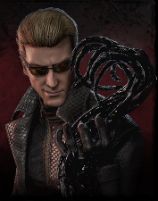
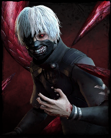
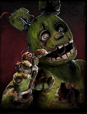

The Trapper (Pułapnik)
Pierwszy zabójca w grze. Używa stalowych pułapek, które rozstawia na mapie, aby unieruchomić ofiary.
Mordercy czyhający w Mgle
Zabójca to gracz, który wciela się w rolę mordercy. Jego zadaniem
jest powstrzymanie ucieczki Ocalonych. Każdy zabójca posiada własną,
unikalną moc oraz zestaw perków.
Aby wygrać grę, zabójca powinien wykonać następujące czynności:

Pierwszy zabójca w grze. Używa stalowych pułapek, które rozstawia na mapie, aby unieruchomić ofiary.

Uważana za najtrudniejszego zabójcę. Potrafi się teleportować, ignorując ściany i przeszkody.

Rzuca toporkami na dystans. Słynie z charakterystycznej kołysanki, którą nuci podczas polowania.
Poniżej krótkie zestawienie trzech popularnych zabójców:
| Zabójca | Moc | Poziom Trudności |
|---|---|---|
| The Trapper | Pułapki | Łatwy |
| The Nurse | Teleportacja | Bardzo trudny |
| The Huntress | Rzucanie toporkami | Średni |

Mocno inspirowany zabójcą Ghostface'em z serii filmów Krzyk, jest oryginalnym zabójcą stworzonym przez BHVR przy użyciu kultowej maski licencjonowanej od Fun World.

Pochodzi z serii gier wideo Silent Hill, a dokładniej z gry Silent Hill 2 z 2001 roku.

Pochodzi z serii gier wideo Resident Evil, a dokładniej z gry Resident Evil 5 z 2009 roku. W Dead by Daylight występuje jako The Mastermind, czyli Albert Wesker, zabójca korzystający z wirusa Uroboros do szybkich i brutalnych ataków.

Pochodzi z mangi z 2011 roku oraz jej anime adaptacji z 2014 roku o tym samym tytule, Tokyo Ghoul. W Dead by Daylight występuje jako The Ghoul, czyli Ken Kaneki, zabójca korzystający ze swojego kagune do szybkiego ścigania i atakowania ocalałych.

Pochodzi z serii horrorów Five Nights at Freddy's i zadebiutował jako „Springtrap” w Five Nights at Freddy's 3.